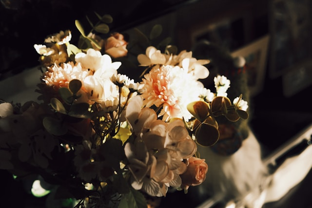

Continua Leyendo
Has leído 65% de tu libro actual

Drama
Don Caesar de Bazan
Gilbert Arthur à Beckett (April 7, 1837 – October 15, 1891) was an English writer. He was a regular member of the staff of Punch magazine along with his younger brother Arthur. Apart from his work on 'Punch,' he wrote songs and music for the German Reeds' entertainment, while in 1873 and 1874 he was collaborator in two dramatic productions.

Psicología
El Mindset Creativo
Entiende cómo funciona el cerebro cuando estás en el estado de "flow".
Tu Colección
play_arrow
Principles of Art
Ray Dalio
play_arrow
Learning Tomorrow
Jane Doe
play_arrow
The Great Gatsby
F. Scott Fitzgerald